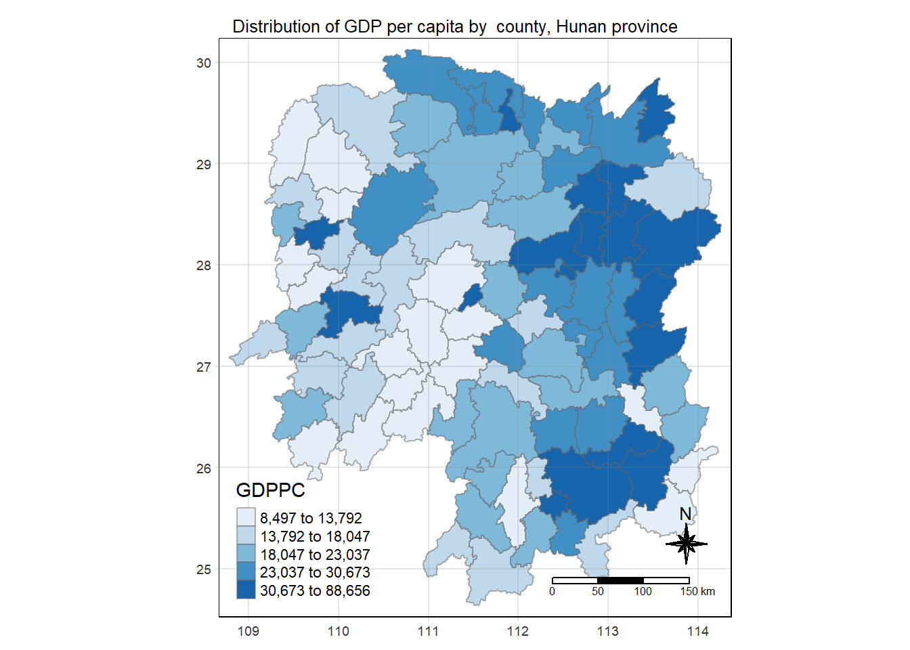

Reveal Code
pacman::p_load(sf, sfdep, sfdep, tidyverse, tmap)Yung Qi Yang
February 5, 2024
Reading layer `Hunan' from data source
`C:\Users\yungq\Desktop\SMU Modules\Y4S1\Geospatial Analysis and Applications\IS415 Course Website\In-Class_Exercise\In-Class_Exercise_05\Data\Geospatial\Hunan'
using driver `ESRI Shapefile'
Simple feature collection with 88 features and 7 fields
Geometry type: POLYGON
Dimension: XY
Bounding box: xmin: 108.7831 ymin: 24.6342 xmax: 114.2544 ymax: 30.12812
Geodetic CRS: WGS 84 NAME_2 ID_3 NAME_3 ENGTYPE_3
Length:88 Min. :21098 Length:88 Length:88
Class :character 1st Qu.:21125 Class :character Class :character
Mode :character Median :21150 Mode :character Mode :character
Mean :21150
3rd Qu.:21174
Max. :21201
Shape_Leng Shape_Area County geometry
Min. :0.7722 Min. :0.02128 Length:88 POLYGON :88
1st Qu.:2.2533 1st Qu.:0.13669 Class :character epsg:4326 : 0
Median :2.5844 Median :0.18564 Mode :character +proj=long...: 0
Mean :2.6057 Mean :0.19274
3rd Qu.:3.0994 3rd Qu.:0.23735
Max. :4.5835 Max. :0.53452 Rows: 88
Columns: 29
$ County <chr> "Anhua", "Anren", "Anxiang", "Baojing", "Chaling", "Changn…
$ City <chr> "Yiyang", "Chenzhou", "Changde", "Hunan West", "Zhuzhou", …
$ avg_wage <dbl> 30544, 28058, 31935, 30843, 31251, 28518, 54540, 28597, 33…
$ deposite <dbl> 10967.0, 4598.9, 5517.2, 2250.0, 8241.4, 10860.0, 24332.0,…
$ FAI <dbl> 6831.7, 6386.1, 3541.0, 1005.4, 6508.4, 7920.0, 33624.0, 1…
$ Gov_Rev <dbl> 456.72, 220.57, 243.64, 192.59, 620.19, 769.86, 5350.00, 1…
$ Gov_Exp <dbl> 2703.0, 1454.7, 1779.5, 1379.1, 1947.0, 2631.6, 7885.5, 11…
$ GDP <dbl> 13225.0, 4941.2, 12482.0, 4087.9, 11585.0, 19886.0, 88009.…
$ GDPPC <dbl> 14567, 12761, 23667, 14563, 20078, 24418, 88656, 10132, 17…
$ GIO <dbl> 9276.90, 4189.20, 5108.90, 3623.50, 9157.70, 37392.00, 513…
$ Loan <dbl> 3954.90, 2555.30, 2806.90, 1253.70, 4287.40, 4242.80, 4053…
$ NIPCR <dbl> 3528.3, 3271.8, 7693.7, 4191.3, 3887.7, 9528.0, 17070.0, 3…
$ Bed <dbl> 2718, 970, 1931, 927, 1449, 3605, 3310, 582, 2170, 2179, 1…
$ Emp <dbl> 494.310, 290.820, 336.390, 195.170, 330.290, 548.610, 670.…
$ EmpR <dbl> 441.4, 255.4, 270.5, 145.6, 299.0, 415.1, 452.0, 127.6, 21…
$ EmpRT <dbl> 338.0, 99.4, 205.9, 116.4, 154.0, 273.7, 219.4, 94.4, 174.…
$ Pri_Stu <dbl> 54.175, 33.171, 19.584, 19.249, 33.906, 81.831, 59.151, 18…
$ Sec_Stu <dbl> 32.830, 17.505, 17.819, 11.831, 20.548, 44.485, 39.685, 7.…
$ Household <dbl> 290.4, 104.6, 148.1, 73.2, 148.7, 211.2, 300.3, 76.1, 139.…
$ Household_R <dbl> 234.5, 121.9, 135.4, 69.9, 139.4, 211.7, 248.4, 59.6, 110.…
$ NOIP <dbl> 101, 34, 53, 18, 106, 115, 214, 17, 55, 70, 44, 84, 74, 17…
$ Pop_R <dbl> 670.3, 243.2, 346.0, 184.1, 301.6, 448.2, 475.1, 189.6, 31…
$ RSCG <dbl> 5760.60, 2386.40, 3957.90, 768.04, 4009.50, 5220.40, 22604…
$ Pop_T <dbl> 910.8, 388.7, 528.3, 281.3, 578.4, 816.3, 998.6, 256.7, 45…
$ Agri <dbl> 4942.253, 2357.764, 4524.410, 1118.561, 3793.550, 6430.782…
$ Service <dbl> 5414.5, 3814.1, 14100.0, 541.8, 5444.0, 13074.6, 17726.6, …
$ Disp_Inc <dbl> 12373, 16072, 16610, 13455, 20461, 20868, 183252, 12379, 1…
$ RORP <dbl> 0.7359464, 0.6256753, 0.6549309, 0.6544614, 0.5214385, 0.5…
$ ROREmp <dbl> 0.8929619, 0.8782065, 0.8041262, 0.7460163, 0.9052651, 0.7…Rows: 1,496
Columns: 3
$ Year <dbl> 2005, 2005, 2005, 2005, 2005, 2005, 2005, 2005, 2005, 2005, 200…
$ County <chr> "Longshan", "Changsha", "Wangcheng", "Ningxiang", "Liuyang", "Z…
$ GDPPC <dbl> 3469, 24612, 14659, 11687, 13406, 8546, 10944, 8040, 7383, 1168…tmap_mode("plot")
tm_shape(hunan_GDPPC) +
tm_fill("GDPPC", style = "quantile", palette = "Blues", title = "GDPPC") +
tm_layout(main.title = "Distribution of GDP per capita by county, Hunan province", main.title.position = "center", main.title.size = 1.2, legend.height = 0.45, legend.width = 0.35, frame = TRUE) +
tm_borders(alpha = 0.5) +
tm_compass(type = "8star", size = 2) +
tm_scale_bar() +
tm_grid(alpha = 0.2)
Moran I test under randomisation
data: x
weights: listw
Moran I statistic standard deviate = 4.7351, p-value = 1.095e-06
alternative hypothesis: greater
sample estimates:
Moran I statistic Expectation Variance
0.300749970 -0.011494253 0.004348351